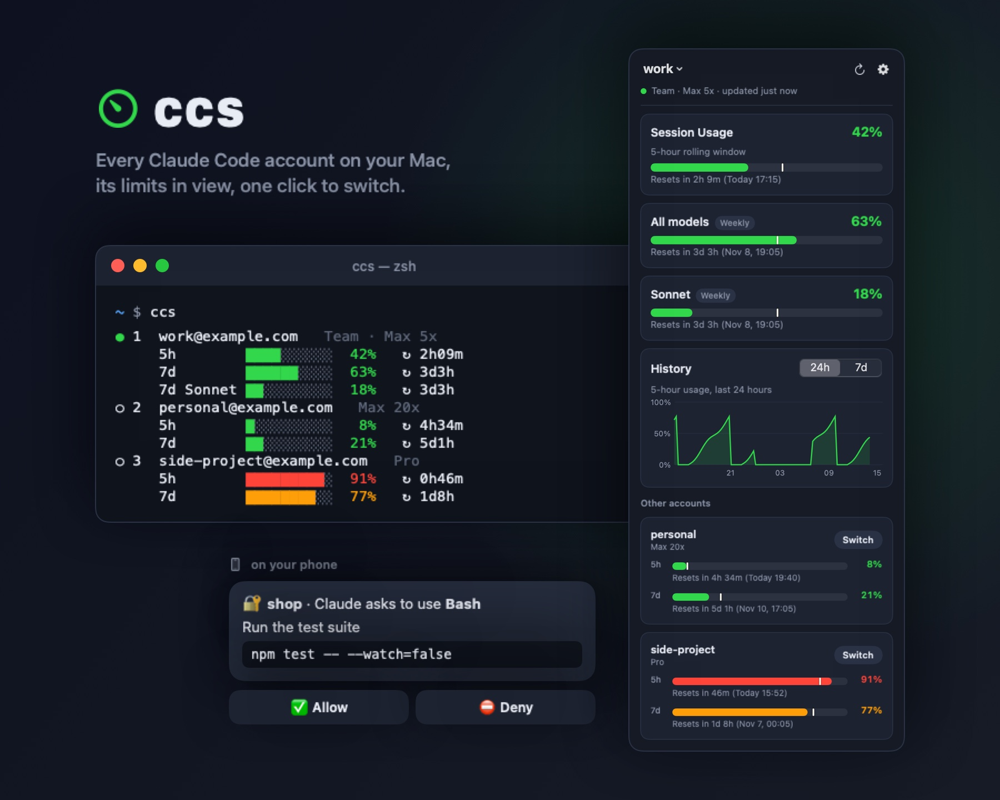
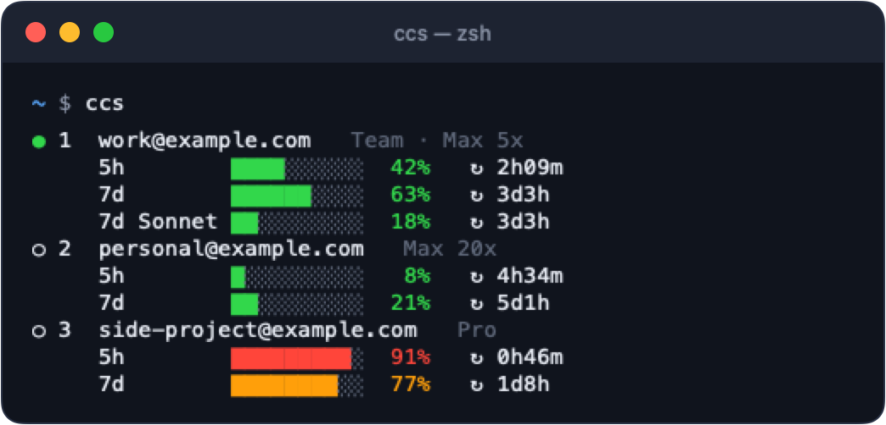
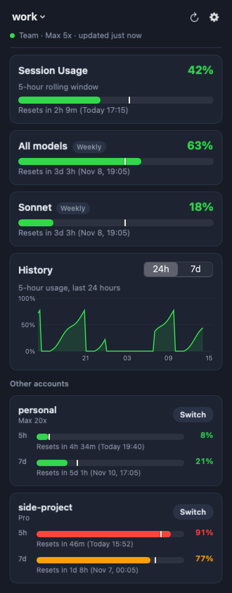

Keep all your Claude Code accounts signed in on one Mac. See each one's 5-hour and weekly usage limits, switch in one click, and let it switch for you before a limit stops your work.

ccs lists every account with its limits and reset times. ccs use 2 switches.
The active account's usage at all times. Click for usage cards, pace markers, a 24-hour chart and a Switch button per account.
Checks every 2 minutes. At 90% it asks, at 95% it moves you to the least-used account.
Usage and switching from your phone. While you're away, Claude's permission prompts and questions come with buttons.
A report when a task finishes, a forecast before a limit runs out, and a warning when usage rises while your Mac is idle.
Tokens never touch a plain file. .env files, keys and folders you list never leave the Mac.

ccs in the terminal: green below 70%, orange from 70%, red from 90%.
You need macOS 14+, the claude CLI and python.org Python 3.9+ at /usr/local/bin/python3. No other dependencies.
git clone https://github.com/green-thunder/claude-code-account-switcher && cd claude-code-account-switcher
mkdir -p ~/.local/bin && cp ccs ~/.local/bin/ccs && chmod +x ~/.local/bin/ccsccs # saves the account you're logged into
claude # then /login with the other account
ccs # adds it to the listccs use 2The menu bar app, auto-switch and the Telegram bot each take one more command. See the full install guide.
Install ccs and run it once to save the account you are logged into. In claude, run /login with the other account, then run ccs again. From then on, ccs use 2 switches to the second account, or use the menu bar app.
ccs shows each account's 5-hour session usage and weekly usage, with the time until each limit resets, in the terminal and in its menu bar app.
The auto agent checks every 2 minutes. At 90% it asks whether to switch, and at 95% it switches by itself to the least-used account that is under 90%.
Only in the macOS Keychain, never in a plain file.
No. ccs is built on the macOS Keychain, launchd and SwiftUI, so it runs on macOS 14 or later only.
Using several accounts to get around usage limits may break Anthropic's terms. ccs is meant for people who have more than one account anyway, such as a team seat and a personal plan.